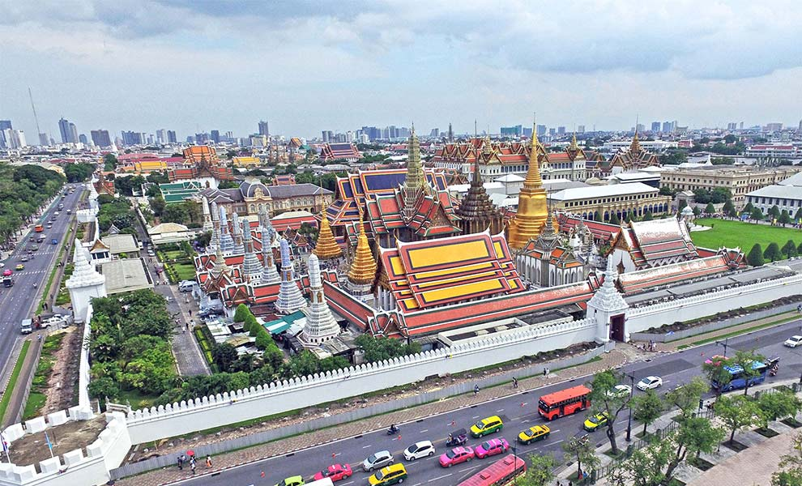

El Gran Palacio Real de Bangkok es un complejo de edificios que sirvió como residencia oficial de los Reyes de Tailandia (antes Siam) entre 1782 y 1925, y que aún hoy se sigue usando para actos de la realeza. Su construcción fue ordenada por Rama I tras decidir que la capital del reino pasaría de Thonburi a Bangkok. El conjunto del Gran Palacio se edificó en el corazón de Rattanakosin, una isla creada artificialmente junto al río Chao Phraya mediante la excavación de canales.